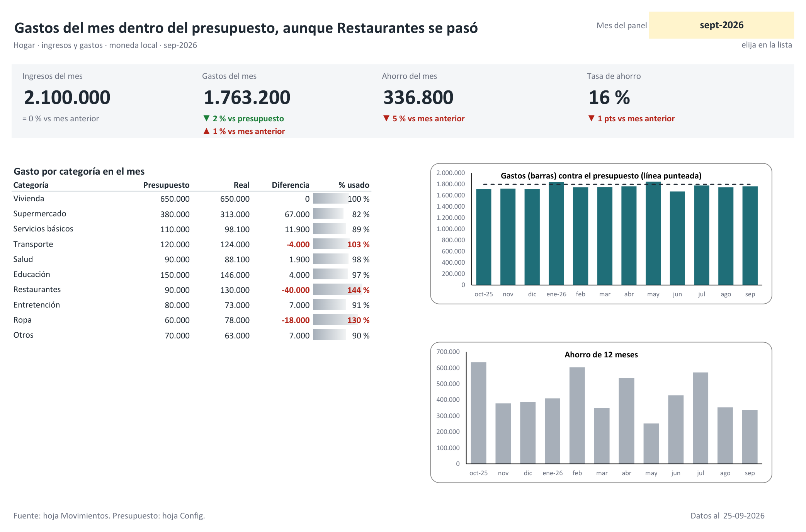

Un presupuesto no es una lista de buenos propósitos. Es una comparación: cuánto se dijo que se iba a gastar en cada cosa y cuánto se gastó. Para que sirva hacen falta las dos mitades, y la que suele fallar es la segunda, porque nadie anota.
Por eso este método parte por anotar y deja el presupuesto para después. Usa dos hojas y una fórmula, sirve igual en Excel y en Google Sheets, y no tiene macros.
Lo corto
- Una tabla de movimientos, una fila por cada ingreso o gasto.
- Entre ocho y doce categorías, elegidas de una lista desplegable.
- El presupuesto de cada categoría sale del promedio real de los últimos tres meses. El ahorro se resta primero, no se espera a ver qué sobra.
- Un resumen que suma cada categoría del mes elegido y la compara con su presupuesto.
- Diez minutos a la semana para anotar y una revisión al mes.
Paso 1. Junte tres meses de gastos reales
Antes de fijar ningún número, baje del sitio de su banco los estados de cuenta de los últimos tres meses, de la cuenta y de las tarjetas. Tres meses alcanzan para ver qué se repite y qué fue un gasto aislado.
Ese es el paso que la mayoría se salta. Quien calcula de memoria cuánto gasta en supermercado suele quedarse corto, y un presupuesto con cifras optimistas se rompe en la segunda semana. Cuando un presupuesto se rompe siempre, uno deja de mirarlo.
Paso 2. La tabla de movimientos
En una hoja llamada Movimientos, una fila por movimiento:
| Columna | Qué va |
|---|---|
| Fecha | El día del gasto o del ingreso |
| Descripción | Texto libre: «Feria», «Cuenta de la luz» |
| Tipo | Ingreso o Gasto |
| Categoría | De una lista corta (paso 3) |
| Monto | Siempre positivo |
Seleccione el rango, conviértalo en tabla con Ctrl + T y, en la pestaña de diseño
de la tabla, cámbiele el nombre a Mov. Así las fórmulas alcanzan solas las filas
nuevas. Después pase a esta tabla los tres meses que juntó en el paso 1. Es la parte más larga de
todo el método, una hora o dos, y se hace una sola vez.
Paso 3. Entre ocho y doce categorías
Con menos de ocho, una sola categoría se lleva la mitad del gasto y no dice nada. Con más de doce, cada anotación obliga a pensar dónde va, y eso basta para dejar de anotar. Una lista que funciona para la mayoría de las casas: vivienda, supermercado, servicios básicos, transporte, salud, educación, restaurantes, entretención, ropa y otros.
Escríbalas en una hoja aparte, que aquí se llama Config, y úselas como lista
desplegable en la columna Categoría (Datos > Validación de datos > Lista). Escrita
a mano, «Supermercado» con un espacio al final ya es otra categoría para la fórmula.
Mire la categoría Otros después del primer mes. Si quedó entre las tres más grandes, hay un gasto que merece nombre propio.
Paso 4. El presupuesto sale de lo que ya gasta
Al lado de cada categoría, en Config, escriba su presupuesto mensual. El punto de
partida es el promedio de los tres meses anotados, redondeado. Recién ahí se decide dónde
recortar, y conviene elegir una o dos categorías, no todas a la vez.
El orden importa. Primero se decide cuánto se quiere ahorrar al mes, después se resta de los ingresos, y lo que queda es el total que las categorías pueden sumar. El que espera a ver qué sobra a fin de mes descubre, casi siempre, que no sobró.
La regla 50/30/20 (la mitad a necesidades, un 30 % a gustos y un 20 % a ahorro) sirve como referencia para saber si uno está lejos. No sirve como punto de partida: una familia que hoy ahorra un 3 % no pasa a un 20 % porque lo diga la planilla.
Paso 5. El resumen del mes
En una hoja Resumen, escriba en B1 el primer día del mes que quiere
mirar, como fecha (por ejemplo, 01-09-2026). Desde la fila 5 hacia abajo, las categorías en la
columna A y su presupuesto en la B. El gasto real de cada categoría va en la columna C:
=SUMAR.SI.CONJUNTO(Mov[Monto];Mov[Tipo];"Gasto";Mov[Categoría];$A5;
Mov[Fecha];">="&$B$1;Mov[Fecha];"<="&FIN.MES($B$1;0))Dice: sume los montos que sean gastos, de la categoría de esta fila, con fecha entre el primer
y el último día del mes de B1. Cópiela hacia abajo. Las otras dos columnas son
aritmética: la diferencia es =B5-C5 y el porcentaje usado es =C5/B5.
Para cambiar de mes basta con cambiar la fecha de B1.
En Excel en inglés las funciones se llaman SUMIFS y EOMONTH; si su
configuración regional separa los argumentos con coma, cambie cada punto y coma por una coma.
Con un mes de un ejemplo inventado, queda así:
| Categoría | Presupuesto | Real | Diferencia | % usado |
|---|---|---|---|---|
| Vivienda | 500.000 | 500.000 | 0 | 100 % |
| Supermercado | 300.000 | 324.000 | -24.000 | 108 % |
| Servicios básicos | 90.000 | 84.000 | 6.000 | 93 % |
| Transporte | 100.000 | 96.000 | 4.000 | 96 % |
| Salud | 60.000 | 41.000 | 19.000 | 68 % |
| Restaurantes | 60.000 | 97.000 | -37.000 | 162 % |
| Otros | 90.000 | 78.000 | 12.000 | 87 % |
| Total | 1.200.000 | 1.220.000 | -20.000 | 102 % |
El total se pasó por 20.000, que es poco. Lo que dice la tabla está más arriba: restaurantes gastó un 62 % más de lo previsto, y salud dejó sin usar casi lo mismo que supermercado se pasó. Con solo el total, ese mes habría parecido normal.
Para que las pasadas salten a la vista, seleccione la columna de diferencia y aplique un formato condicional que pinte de rojo los valores menores que cero (Inicio > Formato condicional > Reglas para resaltar celdas > Es menor que).
Paso 6. Ingresos, ahorro y tasa de ahorro
Los ingresos del mes son la misma fórmula con "Ingreso" y sin la condición de
categoría:
=SUMAR.SI.CONJUNTO(Mov[Monto];Mov[Tipo];"Ingreso";
Mov[Fecha];">="&$B$1;Mov[Fecha];"<="&FIN.MES($B$1;0))El ahorro es ingresos menos gastos, y la tasa de ahorro es el ahorro dividido por los ingresos. En el ejemplo, con ingresos de 1.500.000 y gastos de 1.220.000, el ahorro fue de 280.000 y la tasa, de un 19 %.
De los números del resumen, la tasa de ahorro es el que mejor se compara de un mes a otro. El monto ahorrado sube solo en un mes con un ingreso extra. La tasa muestra si, además, se guardó una parte mayor.
Lo que descuadra un presupuesto
- La tarjeta de crédito. Cada compra se anota el día en que se hace, en su categoría. El pago de la tarjeta a fin de mes no se anota como gasto: sería contar lo mismo dos veces. Los intereses y las comisiones sí son un gasto.
- Las compras en cuotas. Cuota por cuota, cada una en su mes. Así el presupuesto de los meses que vienen ya muestra lo que está comprometido.
- Los gastos que llegan una vez al año. Seguros, contribuciones, matrículas, el permiso de circulación del auto. Súmelos, divida por doce y trate esa cifra como una categoría más que se aparta todos los meses. Si no, marzo o diciembre siempre van a salir en rojo y no será por descuido.
- Los traspasos entre cuentas propias. Pasar plata de la cuenta corriente a una de ahorro no es un gasto ni un ingreso. No se anota.
La rutina
Diez minutos, una vez por semana, con la aplicación del banco abierta: se anotan los movimientos de esos siete días. Una vez al mes se abre el resumen y se miran las filas en rojo.
Frente a una categoría que se pasó hay dos salidas honestas. Una es gastar menos el mes siguiente. La otra es reconocer que el presupuesto estaba mal puesto y subirlo, bajando otro para compensar. Lo que no sirve es hacer las dos cosas a medias cada mes, porque entonces nunca se sabe si el problema era el gasto o el número.
Preguntas frecuentes
¿Cuántas categorías debe tener un presupuesto del hogar?
Entre ocho y doce. Con menos, una sola categoría se lleva la mitad del gasto y no dice nada; con más, anotar se vuelve lento y se abandona. Si la categoría Otros queda entre las tres más grandes, falta una categoría.
¿Cómo se anotan las compras con tarjeta de crédito?
El día de la compra, en la categoría de lo que se compró. El pago de la tarjeta a fin de mes no se anota como gasto, porque sería contar lo mismo dos veces. Una compra en cuotas se anota cuota por cuota, cada una en su mes; los intereses y comisiones de la tarjeta sí son un gasto propio.
¿Sirve este método en Google Sheets?
Sí. La fórmula es la misma, SUMAR.SI.CONJUNTO o SUMIFS, y
FIN.MES o EOMONTH. Si no usa una tabla con nombre, reemplace
Mov[Monto] por el rango de la columna, por ejemplo
Movimientos!E2:E5000, y lo mismo con las demás columnas.
Para seguir. Si prefiere partir de una planilla hecha, hay una gratuita con la tabla de movimientos, las listas desplegables y el resumen del mes por categoría: Presupuesto mensual simple, gratis. No trae presupuesto por categoría; sirve para empezar a anotar, que es el paso 2.
La versión completa suma lo demás de este artículo en un panel de una pantalla: presupuesto por categoría con las pasadas en rojo, ahorro y tasa de ahorro comparados con el mes anterior, y gráficos de 12 meses. Está en Presupuesto y control de gastos del hogar, por USD 9. Funciona en Excel y en Google Sheets, sin macros.

Si además lleva las cuentas de un negocio, el método para la caja de la empresa está en Cómo armar el flujo de caja de una pyme en Excel.